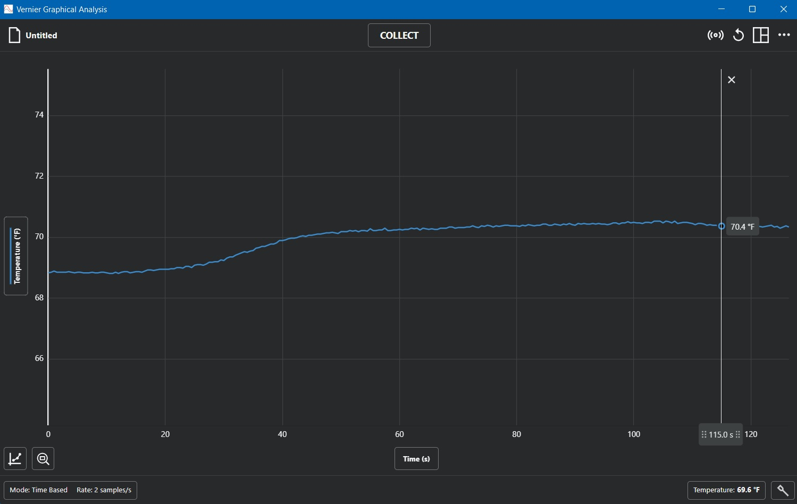
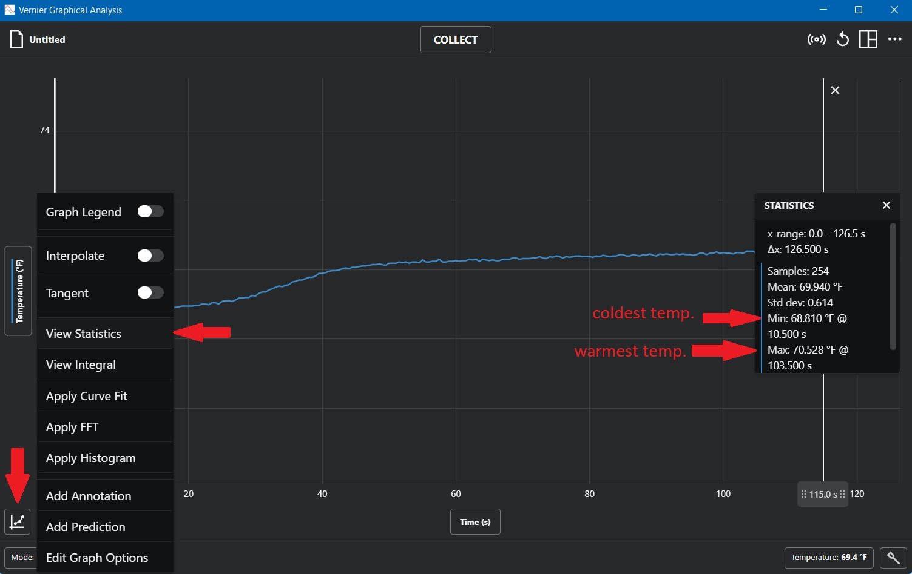
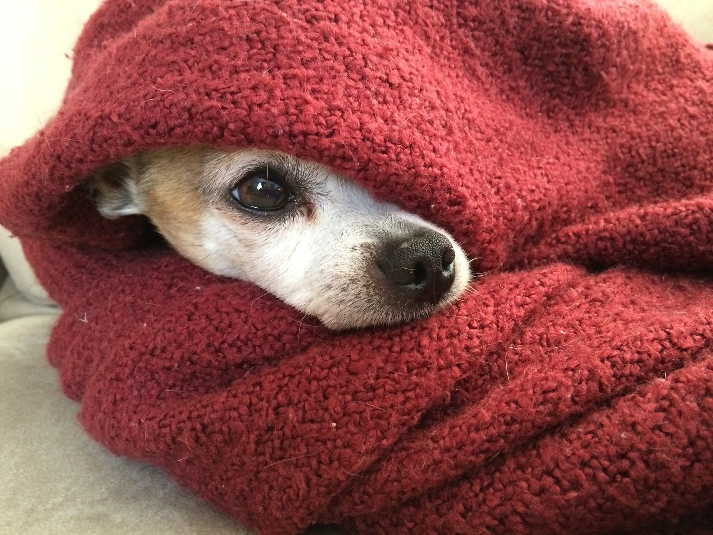
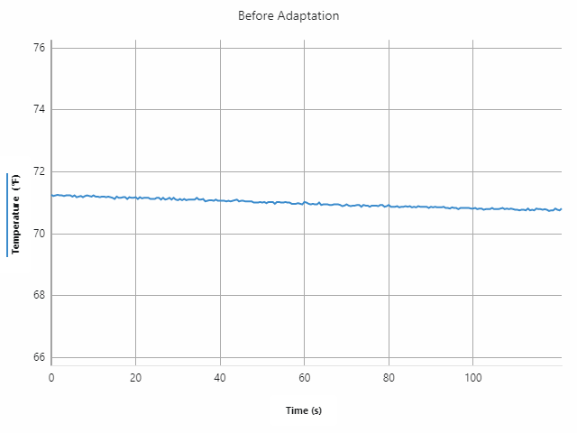
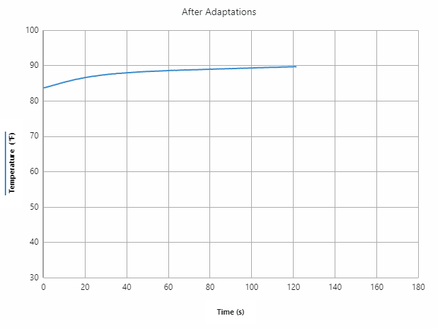
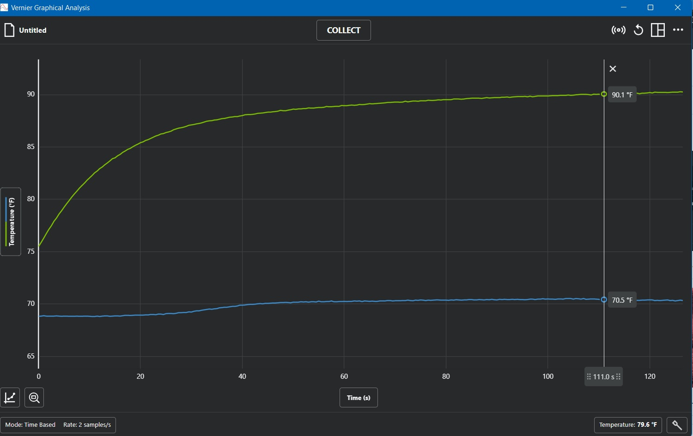

Do It! Vernier Elementary Sensing Science Collection: Protect the Animals!
 The Challenge
The Challenge
Your challenge is to design an adaptation to help protect the animals by keeping them warm during the cold winter months at your local zoo. You will use the Vernier Go Direct Temperature Probe to test and measure the success of your adaptation creations. The goal is to help protect the animals!
Getting Started
Getting started using Bluetooth Connection:
- Charge your sensor for at least 2 hours before first use.
- Turn on your sensor by pressing the power button once. The LED will blink red.
- Launch Graphical Analysis.
- Click or tap Sensor Data Collection.
- Select your Go Direct sensor from the sensor choices.
Getting started using USB Connection:
- Connect the sensor to the USB port.
- Launch Graphical Analysis.
- You are now ready to collect data.
Project Steps
-
Find the Baseline
-
Create the Adaptation
- Collect Data
- Analyze Data
- Modify the Adaptation
- Collect Data After Modifications
Find the Baseline
Before you create your adaptation, take the temperature of your habitat for at least 120 seconds. This is important, because the goal is to have a warmer temperature when you make your adaptation for your animal. In order to know if you made the environment warmer, you have to know where you started.
After you chart the temperature for at least 120 seconds, think about and answer the following questions:
- What was the highest temperature?
- What was the lowest temperature?


Create the Adaptation
Create your adaptation using materials of your choice.
One example is surrounding your environment with an extra layer of material. By adding this adaptation, think about these questions:
- What type of adaptation did you improve in your habitat?
- Is there a way to incorporate all three of the adaptations that were talked about in the lesson?
- If you could change something on the animal to help it adapt better rather than changing the habitat, what would you change?
Collect Data
 Graph the temperature of the habitat with your adaptation. Place the tip of the sensor inside, or on, the adaptation where the animal would be in real life. Answer these questions:
Graph the temperature of the habitat with your adaptation. Place the tip of the sensor inside, or on, the adaptation where the animal would be in real life. Answer these questions:
- Did the adaptation work as you expected?
- What was the highest temperature?
- What was the lowest temperature?
In this picture, you can see a styrofoam cup without insulation as an example of a habitat before modifications for warmth. Layers of pillow filler were added surrounding the same styrofoam cup. Then, an animal replica was placed inside the cup, and the tip of the temperature probe was placed in the location of the animal to get an accurate temperature measurement.


Analyze Data
Compare the two graphs, like the examples above, of the habitat before adaptations were made and after. Answer these questions:
- What is the difference between the high temperatures with and without the adaptation(s)?
- What is the difference between the low temperatures with and without the adaptation(s)?
- Is there anything you and your partner think you could do to improve your adaptation(s) to make a greater difference in the temperatures?

Modify the Adaptation
Make any necessary modifications or improvements to keep the animals warm. Consider what you do to stay warm in the winter. How could you apply those ideas with the materials you have?
Collect Data After the Modifications
Graph the temperature after any change made to your adaptation. What is the difference after each change you and your partner make?
Look at the graphs in Graphical Analysis, find the lowest temperature from:
- Baseline
- Initial adaptation design
- Improved adaptation design
Make a bar graph comparing the differences in temperature.
Analyze your graph:
- What does the bar graph tell us?
- What is the difference between the highest and lowest temperature on the graph?
- How much warmer is the highest temperature in the initial adaptation design and the baseline temperature?
- What is the difference in temperature between the initial adaptation and improved adaptation design?
- Based on your graph and analysis, how effective (or successful) was your adaptation and modification? What information did you use to make that conclusion?